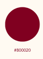
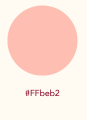
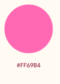
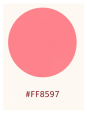
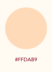
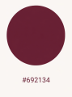
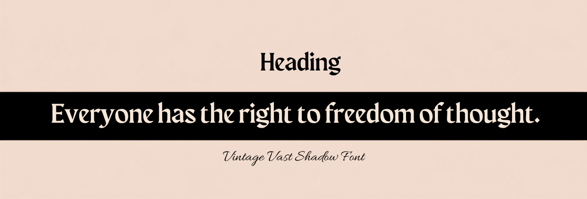
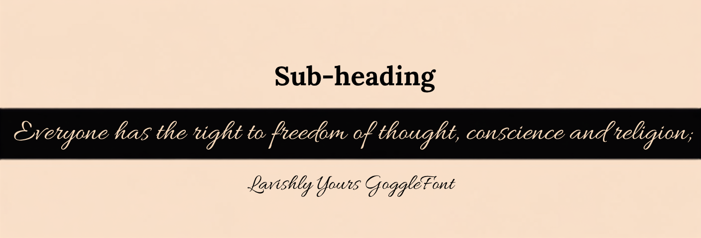

Brand Guide
Sugar Queen Bakery
Sweetness in Every Bite
It is our mission to sweeten special moments for our community with the conforts of made from scratch cakes.
- Brand Logo
- Brand Icon
- Logo Watermark
- Submark
Color Palette
- Burgundy

Will be used for fonts, body text and headings. Also clickable text links- Peach

This will be the page backgound color- Hot Pink

This will be used to accent buttons- light Pink

This will be used as hover color for buttons- Peach Puff

Background accents for images that need to standout. As well as border outlines- Brown

Used for h2 tags when more contrast is needed
Typography
- Vintage Vast Shadow Font

- font used with nav and footers
- Lavishly Yours Font

- Vintage Fin Nightshade Font